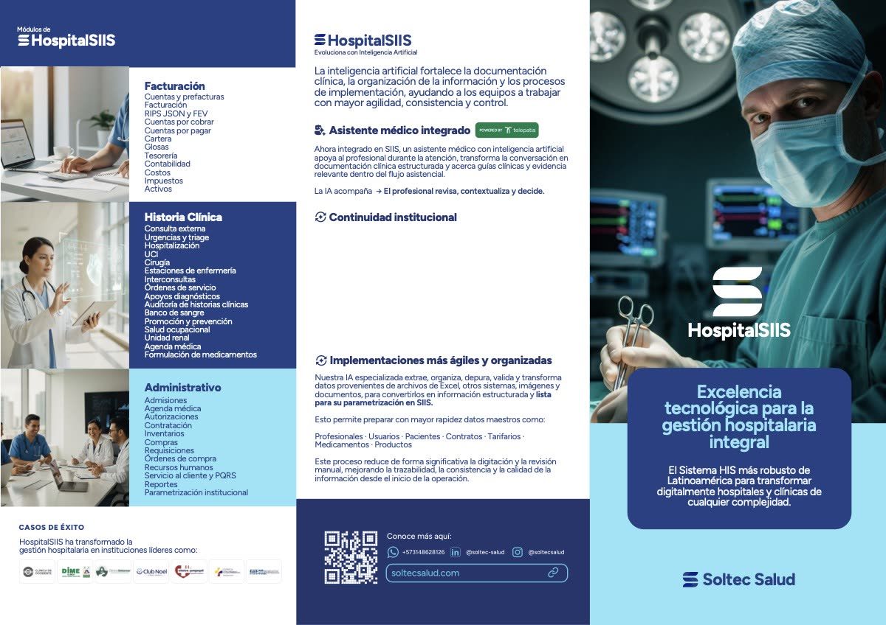
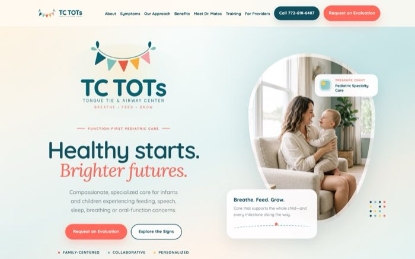
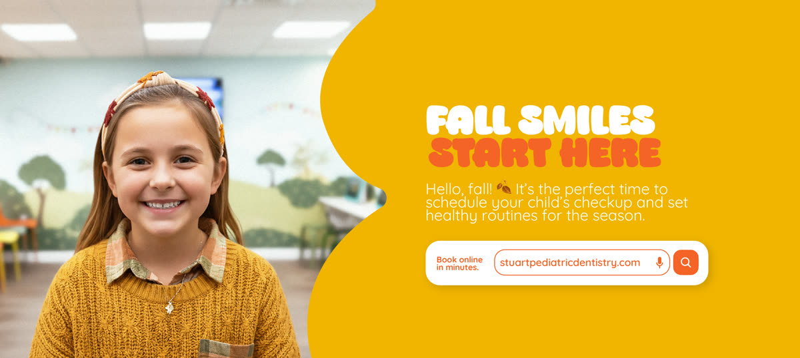
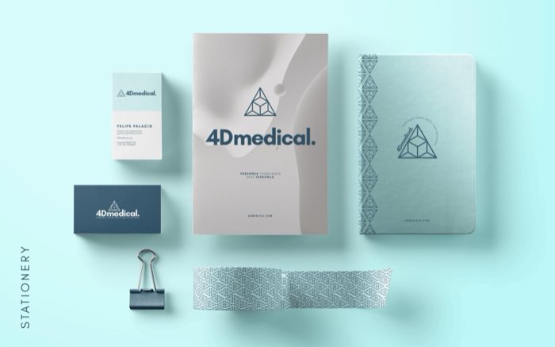
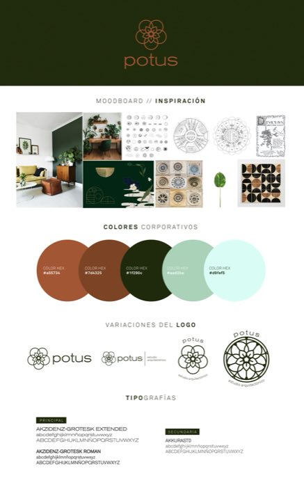
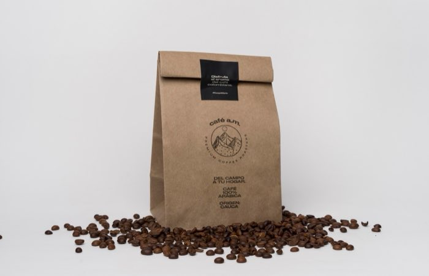

Natalia Caicedo Cano
Case studies
Contact
Marketing Director · Creative Strategist · Cali / Remote
I turn business objectives into brands, campaigns and products
that do a job.
9+
years, strategy through execution
22
projects shipped
75h → 8h
critical process, automated at Soltec Salud
+10,000
consultations shown in webinar data reel






More work